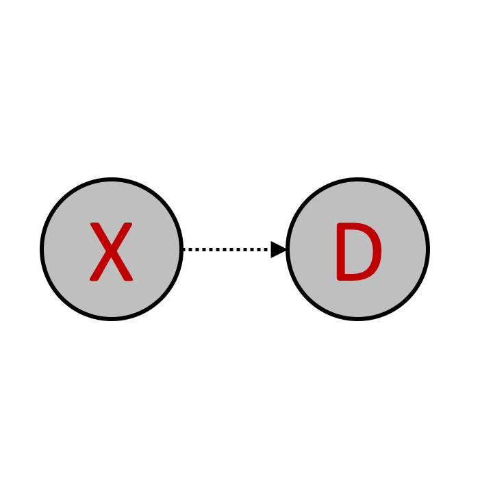
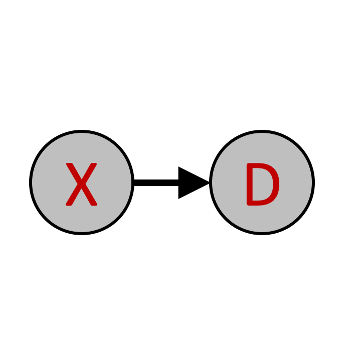
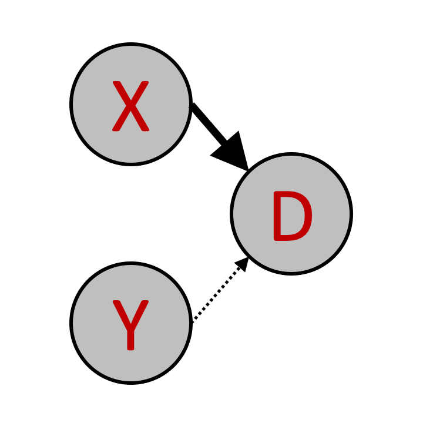
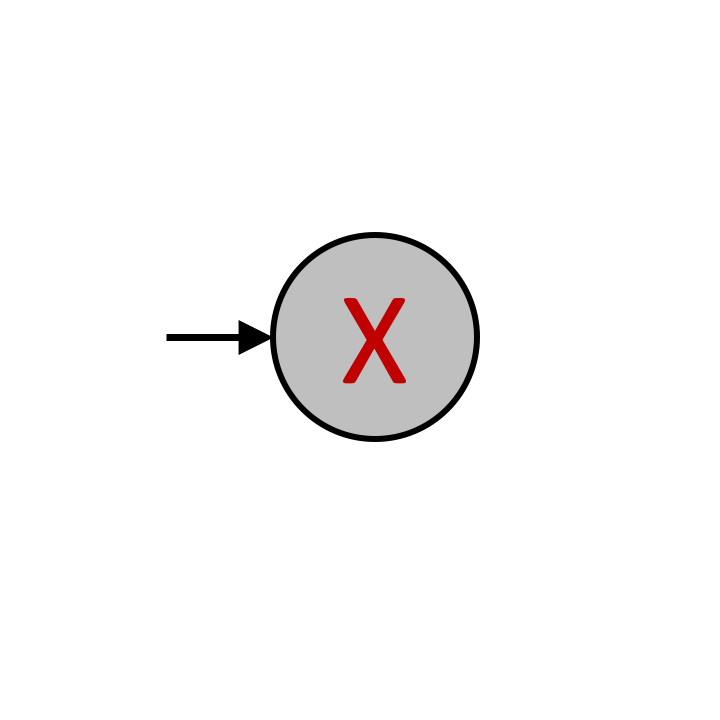
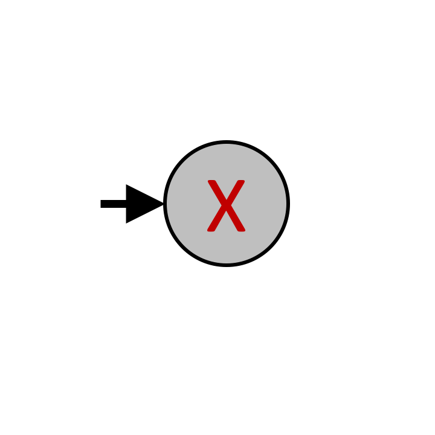
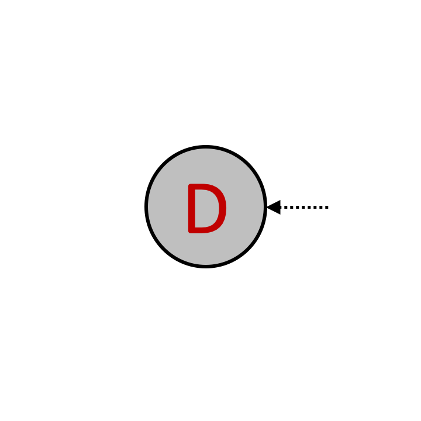
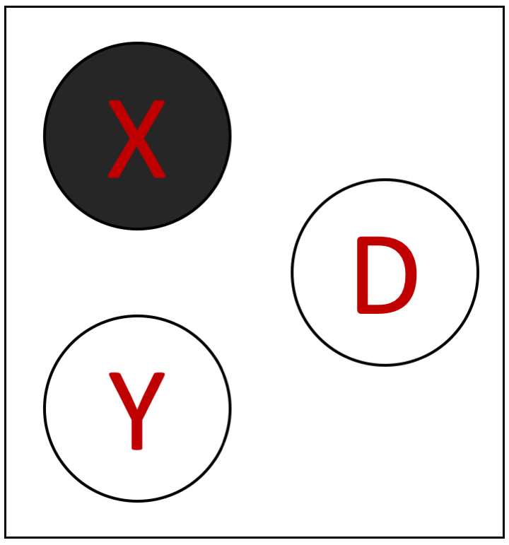
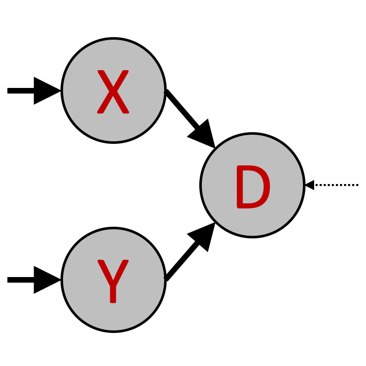
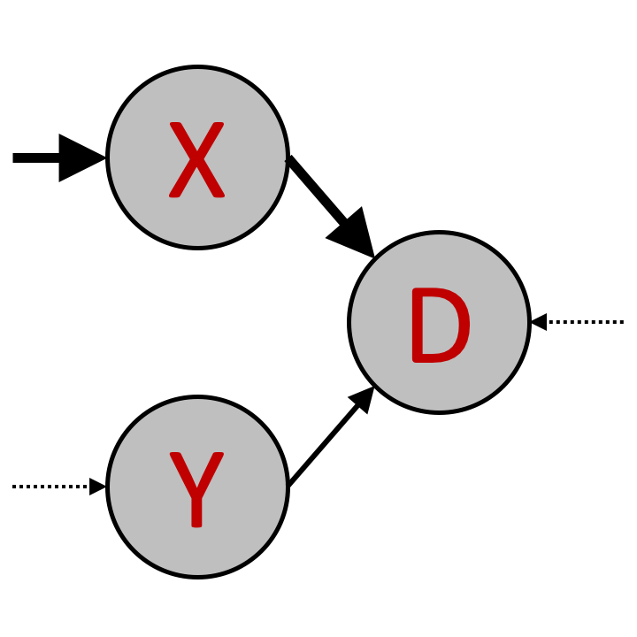
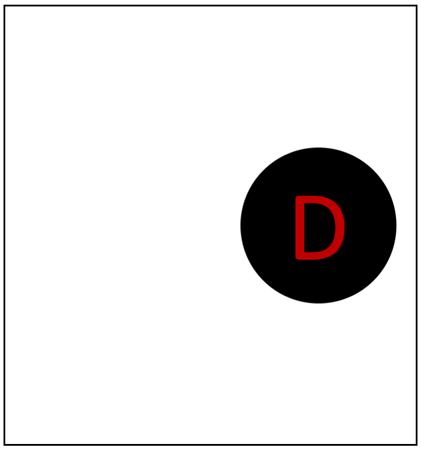

<!DOCTYPE html>
<html>
    <head>
        <title>My experiment</title>
        <script src="jspsych-6.1.0_used/jspsych.js"></script>
	<script src="https://ajax.googleapis.com/ajax/libs/jquery/1.11.1/jquery.min.js"></script>
         <script src="jspsych-6.1.0_used/plugins/jspsych-survey-text.js"></script>
         <script src="jspsych-6.1.0_used/plugins/jspsych-survey-multi-choice.js"></script>
         <script src="jspsych-6.1.0_used/plugins/jspsych-html-keyboard-response.js"></script>         
         <script src="jspsych-6.1.0_used/plugins/jspsych-html-button-response.js"></script>         
	 <script src="jspsych-6.1.0_used/plugins/jspsych-instructions.js"></script>
         <script src="jspsych-6.1.0_used/custom_plugins/jspsych-three-image-slider-response.js"></script>
	<script src="jspsych-6.1.0_used/plugins/jspsych-external-html.js"></script>
         <script src="jspsych-6.1.0_used/plugins/jspsych-image-keyboard-response.js"></script>
        <link href="jspsych-6.1.0_used/css/jspsych.css" rel="stylesheet" type="text/css"></link>
    </head>
    <body></body>
    
     
  <script>


    /* create timeline */
    N_gs = 5
    N_qs = 1
    train_trials = N_gs * N_qs
    test_trials = 5
    N_trials = test_trials + train_trials
    var N_attempts = 3;
    var attempt = 0;
    
    N_total = train_trials + test_trials
    
    
    var condition = jsPsych.randomization.sampleWithReplacement(['poscorr', 'negcorr'], 1);
    
    
    if (condition == 'poscorr'){
    train_probs = [ 102.,    3.,    2.,   13.,   10.,    2.,   13.,    3.,   13.,
          3.,    2.,    0.,    0.,    7.,    0.,    0.,    2.,    3.,
          2.,    0.,    2.,    0.,    1.,    2.,    0.,    0.,   13.,
         13.,    0.,    0.,    2.,    1.,    0.,    2.,    0.,    2.,
         10.,    7.,    1.,    1.,   22.,    1.,    1.,    7.,   10.,
          2.,    0.,    2.,    0.,    1.,    2.,    0.,    0.,   13.,
         13.,    0.,    0.,    2.,    1.,    0.,    2.,    0.,    2.,
          3.,    2.,    0.,    0.,    7.,    0.,    0.,    2.,    3.,
         13.,    3.,   13.,    2.,   10.,   13.,    2.,    3.,  102.]
    } else if (condition == 'negcorr'){
    
    train_probs = [  13.,    3.,   13.,    2.,   10.,   13.,    2.,    3.,  102.,
          3.,    2.,    0.,    0.,    7.,    0.,    0.,    2.,    3.,
         13.,    0.,    0.,    2.,    1.,    0.,    2.,    0.,    2.,
          2.,    0.,    2.,    0.,    1.,    2.,    0.,    0.,   13.,
         10.,    7.,    1.,    1.,   22.,    1.,    1.,    7.,   10.,
         13.,    0.,    0.,    2.,    1.,    0.,    2.,    0.,    2.,
          2.,    0.,    2.,    0.,    1.,    2.,    0.,    0.,   13.,
          3.,    2.,    0.,    0.,    7.,    0.,    0.,    2.,    3.,
        102.,    3.,    2.,   13.,   10.,    2.,   13.,    3.,   13.]
    }
    
    test_probs = [   0.,    0.,    0.,    0.,    3.,    0.,    0.,    0.,    0.,
          0.,    3.,    0.,    3.,   26.,    3.,    0.,    3.,    0.,
          0.,    0.,    0.,    0.,    3.,    0.,    0.,    0.,    0.,
          0.,    3.,    0.,    3.,   26.,    3.,    0.,    3.,    0.,
          3.,   26.,    3.,   26.,  205.,   26.,    3.,   26.,    3.,
          0.,    3.,    0.,    3.,   26.,    3.,    0.,    3.,    0.,
          0.,    0.,    0.,    0.,    3.,    0.,    0.,    0.,    0.,
          0.,    3.,    0.,    3.,   26.,    3.,    0.,    3.,    0.,
          0.,    0.,    0.,    0.,    3.,    0.,    0.,    0.,    0.]
        
    var graphs0 = []    
    for (var i = 1; i < 82; i++) {
    if (i < 10) {
        graphs0 = graphs0.concat('Slide0' + i);
        } else{
        graphs0 = graphs0.concat('Slide' + i);
        }
          
    }   
    var train_graphs = jsPsych.randomization.sampleWithReplacement(graphs0, 500, train_probs).slice(start = 0, end = train_trials);
    
    var test_graphs = jsPsych.randomization.sampleWithReplacement(graphs0, 500, test_probs).slice(start = 0, end = test_trials);
    
    graphs = train_graphs.concat(test_graphs)
    
        
    var all_queries = []    
    for (var i = 1; i < 10; i++) {
          all_queries = all_queries.concat('draw_querys/Slide0' + i);
        }
    for (var i = 10; i < 55; i++) {
          all_queries = all_queries.concat('draw_querys/Slide' + i);
        }


    
    var reps = 1 + N_trials / 54;
    var l_queries = jsPsych.randomization.repeat(all_queries, reps).slice(start = 0, end = N_trials);
    
    var r_queries = []
    var new_index = 0
    for (var i = 0; i < N_trials; i++) {
          index = parseInt(l_queries[i].slice(start = 17, end = 20));
	  if (index % 2){
		new_index = index + 1;
	} else {
		new_index = index - 1;
	}
		
	  if (new_index < 10){
		  r_queries = r_queries.concat('draw_querys/Slide0' + new_index);
        } else{
		  r_queries = r_queries.concat('draw_querys/Slide' + new_index);
	}
	  
        }
	
    
    var timeline = [];
    
    var intro = {
      type: "survey-text",
      choices: ["Continue"],
      preamble: "<p> This study is part of a research project conducted by " +
                "Samuel Gershman, Harvard University.</p>"+
                "<p> We want to examine people's intuitions about causes and effects.</p>" +
              "<p>Please enter your MTurk ID and press continue to begin.</p>",
	      
  questions: [
    {prompt: "MTurk ID", name: 'ID', rows: 2, columns: 40, required: true},
     ],
    };
    timeline.push(intro);
    
    
    // consent

	var check_consent = function(elem) {
		if ($('#consent_checkbox').is(':checked')) {
			return true;
		}
		else {
			alert("If you wish to participate, you must check the box.");
			return false;
		}
		return false;
	};
	
	var consent_block = {
		type:'external-html',
		url: "consent-causal.html",
		cont_btn: "start",
		check_fn: check_consent
	};

    timeline.push(consent_block)
	
    var instructions = {
      type: "instructions",
      pages: [
        'Welcome to the experiment. Click next to continue to the instructions.',
        
        'In this experiment, we want to test your intuitions about cause and effect. <br>'+
        'X causes D is represented with a link from X to D as follows: <br> </img>',
        
        'There can be more than one cause for the same effect. This is indicated by adding more links, for example:<br>'+
        '</img><br>'+
        'Here both X and Y independently can cause D.<br> if both causes (X and Z)) occur, then D is more likely to occur than if only one or none of the causes occurs.',
	
	'These links between X, Y, and Y are called the <b> causal structure </b>.  <br>',
        
        'The presence of a cause (X or Z) does not guarantee that the effect D will occur. <br> It only increases the probability that D will occur.',
        
        'How much this probability increases is determined by the <b>strength of the link between the cause and the effect</b>. <br>The strength is indicated by the type of arrow.',
        
        'The three types of links are determined by the strength of the arrow: <br> </img> <b>Weak</b> link. <br> Everytime the cause occurs, the effect has a <b>20%</b> probability of ocurring.'+
        '<hr> </img> <b>Moderate</b> link. <br>Everytime the cause occurs, the effect has a <b>50%</b> probability of ocurring.' +
        '<hr> </img> <b>Strong</b> link.<br> Everytime the cause occurs, the effect has a <b>80%</b> probability of ocurring. <br>',
        
        'The strength of links can be <b>mixed</b> in the same causal structure, for example:'+
        '<br> </img> <br> Indicates <b> X strongly causes D </b> and <b> Y weakly causes D </b>. <br>',
         
         'The causes (X and Z) also do not always occur.',
         
        'The <b>probability of the causes</b> occurring is indicated by <br> the type of arrows pointing to the cause', 
        
        'The three types of arrows have similar meanings here : <br> </img> <b>Weak</b> probability of occurrence. <br> The cause has a <b>20%</b> probability of occurring.<hr>'+
        '</img> <b>Moderate</b> probability of occurrence. <br> The cause has a <b>50%</b> probability of occurring.<hr>' +
        '</img> <b>Strong</b> probability of occurrence. <br> The cause has a <b>80%</b> probability of occurring. <br>',
        
        'The probabilities of the two different causes can be <b>mixed</b> in the same causal structure, for example:'+
        '<br> </img> <br> Indicates that <b> X is moderately likely </b>  while <b> Y is strongly likely. </b> <br>',
        
        'Finally, there is some <b> additional noise</b>. <br>'+
        'The effect D can sometimes occur (with a <b>20%</b> probability) even when neither of the causes (X, Z) occurs. <br> <b>This remains the same across all causal structures</b>, and is shown by the weak arrow pointing to Y: <br> </img> <br>',
        
        'An example causal structure you will see in this experiment is: <br> </img> <br> <br>'+
        
        'Given a causal structure of this sort, you will have to make judgments about the probability that X, Y, and Y occur. <br> This is described in the next section.',
	
	 'You will be shown two images of <b> causal states </b> like the one below: <br> <br>'+
        '</img>  <br> <br>'+
        '<b>Black indicates that a variable ocurred, white indicates it did not occur.</b><br>'+
	'In this example, therefore, X occurs, while D and Y do not. <br>'+
        'Your task is to guess which of the two causal states is more likely. <br>',
	
	
        'We first go through a few examples.',
        
        'For Causal structure : </img> <br>'+
        '</img> is much more probable than </img>',
        
        
        'For Causal structure : </img> <br>'+
        '</img> is more probable than </img>, <br> but they are both less probable than </img>',
	
	'Sometimes, the causal state will not have information about all the variables, like the one below: <br> <br>'+
        '</img>  <br> <br>'+
	'In this example, we do not know anything about whether X and Y occurred, we just know that D did not occur. <br>',
        
        'For example, with Causal structure : </img> <br>'+
	'Even if we do not know if the causes (X and Z) occurred, we know they are likely to occur, and that when they occur, they strongly cause the effect D <br>'+
        'Therefore, </img> is much more probable than </img>',

	
        'Once you enter the experiment, you will first see only the causal structure for 2 seconds.<br> Please use this time to think about what the probabilities of different states might be under that causal structure. <br> <br> A question will then appear, and you will have to enter a judgment, on a slider. <br>  Moving the slider to the left means you think the causal state on the left is more likely. Moving it to the right mean you think the right state is more likely. <br> The scale goes from the left state being 20 time more likely than the right state, to the right state being 20 time more likely than the left state  <br> Please try to be as accurate in your judgment as possible.',    
        
        'On the next page you will see a few comprehension questions. <br> You will not be able to progress to the experiment until you answer the questions correctly. <br> If you answer incorrectly you will be redirected to a summary of the instructions. <br> You will get 3 attempts to answer the comprehension questions correctly.<br> '
    ],
    show_clickable_nav: true
    };
    
    timeline.push(instructions);
    
    
    var comprehension = {
      type: 'survey-multi-choice',
      preamble: '<b><u>Please answer the following comprehension questions</u></b>', 
      button_label: 'Submit',
      questions: [
        {prompt: "If a cause ocurred, the effect will always occur", name: 'prob_c', options: ['True', 'False'], required:true, horizontal: true}, 
        {prompt: "How many types of links are there (that vary in strength)", name: 'types', options: ['1', '2', '3', '4'], required:true, horizontal: true},
        {prompt: "If a cause does not occur, the effect cannot occur", name: 'prob_e', options: ['True', 'False'], required:true, horizontal: true}, 
        {prompt: "A black background in a state means that variable did occur.", name: 'bg', options: ['True', 'False'], required:true, horizontal: true},
        {prompt: "What is your task in this experiment?", name: 'task', options: ['To judge the probability of specific causal structures', 'To judge how probable the variable X is', 'To judge the probability of variables occurring, given a causal structure'], required:true},
      ],
    };
    
    timeline.push(comprehension);
    
    
    function right_answers2(q1, q2, q3, q4, q5){
    right = (q1 && q2 && q3 && q4 && q5);
    return right;
    }
    
    
    function right_answers(data){
    q1 = data['prob_c'] == 'False';
    q2 = data['types'] == '3';
    q3 = data['prob_e'] == 'False';
    q4 = data['bg'] == 'True';
    q5 = data['task'] == 'To judge the probability of variables occurring, given a causal structure';
    right = (q1 && q2 && q3 && q4 && q5);
    return right;
    }
    
    
     var success = {
      type: "html-button-response",
      choices: ["Continue"],
      stimulus: "You have answered the comprehension questions correctly! <br>"+
              "<p>Press continue to begin the experiment.</p>",
    };
    
     var failure = {
      type: "html-button-response",
      choices: ["Continue"],
      stimulus: 'You have not answered the comprehension questions correctly. <br>'+
              'Press continue to go to the instructions again.',
    };
    
    
    var short_instructions = {
      type: "instructions",
      pages: [
        
        
        'In this experiment, we want to test your intuitions about cause and effect. <br>'+
        'X causes D is represented with a link from X to D as follows: <br> </img><hr> <hr> '+
        
        'There can be more than one cause for the same effect. This is indicated by adding more links, for example:<br>'+
        '</img><br>'+
        'Here both X and Y independently can cause D.<br> if both causes (X and Z) occur, then D is more likely to occur than if only one or none of the causes occurs.<hr> <hr> '+
	
	'These links between X, Y, and Y are called the <b> causal structure </b>.  <br><hr> <hr> '+
        
        'The presence of a cause (X or Z) does not guarantee that the effect D will occur. <br> It only increases the probability that D will occur.<hr> <hr> '+
        
        'How much this probability increases is determined by the <b>strength of the link between the cause and the effect</b>. <br>The strength is indicated by the type of arrow.<hr> <hr> '+
        
        'The three types of links are determined by the strength of the arrow: <br> </img> <b>Weak</b> link. <br> Everytime the cause occurs, the effect has a <b>20%</b> probability of ocurring.'+
        '<hr> </img> <b>Moderate</b> link. <br>Everytime the cause occurs, the effect has a <b>50%</b> probability of ocurring.' +
        '<hr> </img> <b>Strong</b> link.<br> Everytime the cause occurs, the effect has a <b>80%</b> probability of ocurring. <br><hr> <hr> '+
        
        'The strength of links can be <b>mixed</b> in the same causal structure, for example:'+
        '<br> </img> <br> Indicates <b> X strongly causes D </b> and <b> Y weakly causes D </b>. <br><hr> <hr> '+
         
         'The causes (X and Z) also do not always occur.<hr> <hr> '+
         
        'The <b>probability of the causes</b> occurring is indicated by <br> the type of arrows pointing to the cause<hr> <hr> '+ 
        
        'The three types of arrows have similar meanings here : <br> </img> <b>Weak</b> probability of occurrence. <br> The cause has a <b>20%</b> probability of occurring.<hr>'+
        '</img> <b>Moderate</b> probability of occurrence. <br> The cause has a <b>50%</b> probability of occurring.<hr>' +
        '</img> <b>Strong</b> probability of occurrence. <br> The cause has a <b>80%</b> probability of occurring. <br><hr> <hr> '+
        
        'The probabilities of the two different causes can be <b>mixed</b> in the same causal structure, for example:'+
        '<br> </img> <br> Indicates that <b> X is moderately likely </b>  while <b> Y is strongly likely. </b> <br><hr> <hr> '+
        
        'Finally, there is some <b> additional noise</b>. <br>'+
        'The effect D can sometimes occur (with a <b>20%</b> probability) even when neither of the causes (X, Z) occurs. <br> <b>This remains the same across all causal structures</b>, and is shown by the weak arrow pointing to Y: <br> </img> <br><hr> <hr> '+
        
        'An example causal structure you will see in this experiment is: <br> </img> <br> <br>'+
        
        /*'A is moderately likely to occur <br> B is strongly likely to occur<br> <br>B strongly causes C <br> A moderately causes C<br> <br><hr> <hr> '+*/
        
        
        'Given a causal structure of this sort, you will have to make judgments about the probability that X, Y, and Y occur. <br> There are various kinds of question you might be asked. This is described in the next section.<hr><hr>'+
	
	 'After you are given a specific causal structure, you might see a <b>causal state</b> like the one below: <br> <br>'+
        '</img>  <br> <br>'+
        '<b>Black indicates that a variable ocurred, white indicates it did not occur.</b><br>'+
	'In this example, therefore, X and D occur, while Y does not. <br>'+
        'Your task is to guess the probability of this happenning, given the underlying causal structure. <br><hr><hr>'+
	
	'Sometimes you will have to make judgments about a specific variable (rather than a whole causal state.' + 
	
	'For example, After you are given a specific causal structure, you might see a pictue like the one below: <br> <br>'+
        '</img>  <br> <br>'+
        'Black and white have the same meanings as before, and <b> gray indicates we do not know if this variable occurred.</b><br>'+
	'In this example, therefore, X did not occur, D occurred, and we do not know if Y occurred.<br>'+
	'The question mark indicates the variable whose probability you have to guess.'+
        'Your task here is to guess the probability of Y ocurring, given your knowledge of the causal structure, <b> as well as </b> the knowledge that X did not occur and D did occur. <br><hr><hr>'+

	'The third and final kind of question you might be asked is as follows: <br> After you are given a specific causal structure, you will see a <b>causal state</b> like the one below: <br> <br>'+
        '</img>  <br> <br>'+
        'Black indicates that a variable ocurred, white indicates it did not occur, while gray indicates we do not know if it occurred.<br>'+
	'In this example, therefore, X did occur, and we do not know if D and Y occurred.<br>'+
	'The question mark indicates the variable whose probability you have to guess.'+
        'Your task here is to guess the probability of Y ocurring, given your knowledge of the causal structure, <b> as well as </b> the knowledge that X did occur -- without any knowledge of if D occurred. <br><hr><hr>'+
	
	'You will have to answer 50 such questions<hr><hr>'+
        
        
        'We first go through a few examples to build intuitions for the domain.<hr><hr>'+
	
        'For Causal structure : </img> <br>'+
        '</img> is much more probable than </img><hr> <hr> '+
        
        
        'For Causal structure : </img> <br>'+
        '</img> is more probable than </img>, <br> but they are both less probable than </img><hr> <hr> '+ 

	'Once you enter the experiment, you will first see only the causal structure for 2 seconds.<br> Please use this time to think about what the probabilities of different states might be under that causal structure. <br> <br> A question will then appear, and you will have to enter a probability judgment, on a slider. <br>  The slider goes from 0 to 100. <br> 0 on this scale means Very unlikely, 100 means Very likely. <br> Please try to be as accurate in your judgment as possible. <hr> <hr> ' + 
	
        '<b>You will have to answer a few comprehension questions on the next page before starting the experiment. </b>'
    ],
    show_clickable_nav: true
    };
    
    
    
    
    var pass_test = false;
    for (attempt = 0; attempt < N_attempts - 1; attempt++){
	N_left = N_attempts - attempt
	
        var comp_if_node = {
            timeline: [failure, short_instructions, comprehension],
            conditional_function: function(){
                var data = jsPsych.data.get().last(1).values()[0]['responses'];
		/*document.getElementById("answers").innerHTML = data*/
                if(right_answers(JSON.parse(data))){
			pass_test = true
                    return false;
                } else {
                    return true;
                }
            }
        }
	timeline.push(comp_if_node);
	
    };


    /* test trials  */
    
    var all_test_trials = []
    all_test_trials.push(success)
    
    for (var trial = 0; trial < N_trials; trial++){
    
        var view_trial = { 
          type: "image-keyboard-response",
          stimulus: 'draw_stimuli/'+graphs[trial]+'.png',
          stimulus_height: 300,
          choices: jsPsych.NO_KEYS, 
          trial_duration: 2000,
          }
          
        all_test_trials.push(view_trial);

        var response_trial = {
          type: "three-image-slider-response",
          stimulus_height: 300,
          resp_stimulus_height: 120,
          max: 100,
          labels: ['Left 20x likely', 'Right 20x likely'],
          start: 50,
          button_label: 'Submit',
          require_movement: true,   
          stimulus: 'draw_stimuli/'+graphs[trial]+'.png',
	  left_resp_stimulus: l_queries[trial]+'.png',
          right_resp_stimulus: r_queries[trial]+'.png',
          data: {"condition": condition, 
		'stimulus': graphs[trial], 
		'left_resp_stimulus': l_queries[trial]+'.png',
		'right_resp_stimulus': r_queries[trial]+'.png'},
          }
    
        all_test_trials.push(response_trial);
      
    };
    
    
     var eoe_pass = {
      type: "html-button-response",
      choices: ["Continue"],
      stimulus: "This is the end of the questions about causal structure. <br>Press continue to go to the debriefing and feedback section. <br>",
    };
    
    all_test_trials.push(eoe_pass)
    
     var eoe_fail = {
      type: "html-button-response",
      choices: ["Exit"],
      stimulus: "You have used up all "+ N_attempts + " attempts to answer comprehension. <br> The experiment is over, press the button to exit. <br>",
    };


	// debriefing
	var debrief_block = {
			type: 'external-html',
			url: 'debrief.html',
			cont_btn: "Continue"
	};

	// function to save data
	function saveData(filename, filedata){
	
		if (pass_test){
		$.ajax({
			type:'post',
			cache: false,
			url: 'save_data.php', // this is the path to the above PHP script
			data: {filename: filename, filedata: filedata},
			complete: function() {
				window.location.href = "confirmation_code_1PEL.html";
			}
		});
		} 
		
	}
  
    // generate random subject id
	var subject_id = jsPsych.randomization.randomID(8);
	
	
    
        
    var comment_box = {
      type: 'survey-text',
      preamble: "<b>Please provide your feedback about the task below</b>",
  questions: [
    {prompt: "Were the instructions clear?", name: 'instructions', rows: 2, columns: 40},
    {prompt: "How difficult did you find the task?", name: 'difficulty', rows: 2, columns: 40},
    {prompt: "How long did you take to do this task?", name: 'time', rows: 2, columns: 40},
    {prompt: "Do you have any other comments?", name: 'other', rows: 5, columns: 40},
     ],
    };
    
    
      var fail_if_node = {
            timeline: [eoe_fail],
            conditional_function: function(){
                if(pass_test){
                    return false;
                } else {
                    return true;
                }
            }
        }
     
     timeline.push(fail_if_node);
     
     
      var pass_if_node = {
            timeline: [success].concat(all_test_trials, [debrief_block, comment_box]),
            conditional_function: function(){
                if(!pass_test){
                    return false;
                } else {
                    return true;
                }
            }
        }
	
	timeline.push(pass_if_node);
    

    
 

  jsPsych.init({
    timeline: timeline,
	  on_finish: function(){
					saveData(subject_id + '.csv', jsPsych.data.get().csv())
				}
  });
  </script>
  </html>